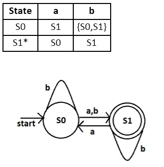

Prosedur prosedur merubah NFA (Non-Deterministic Finite Automata) menjadi DFA (Deterministic Finite Automata) :
Berikut table transisi dan diagram transisi untuk NFA :

Dapat dilihat dari gambar di atas ada suatu state yang diberi inputan menuju ke beberapa state, yaitu S0 yang diberi inputan b bisa menuju ke S0 dan S1